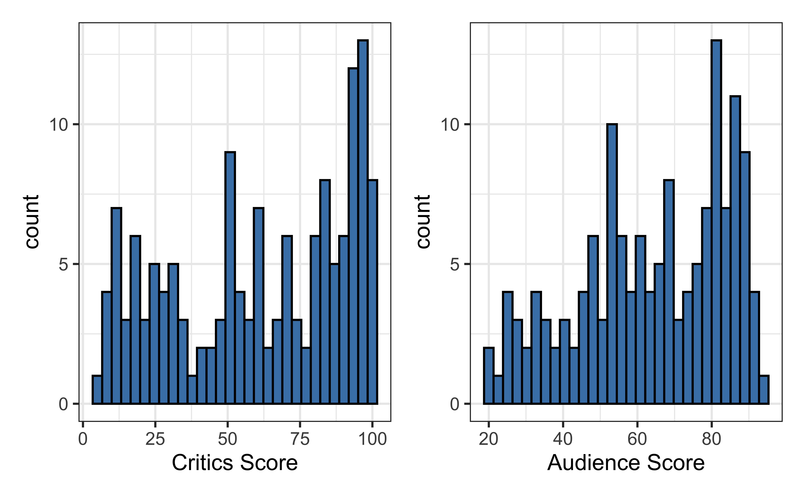
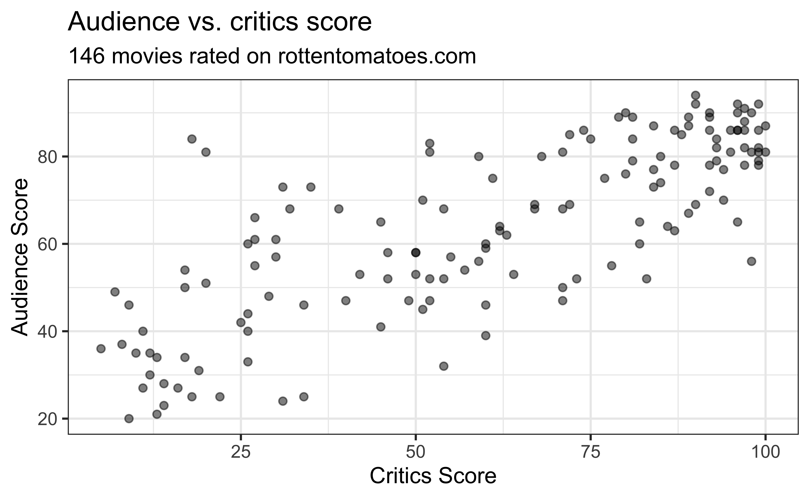
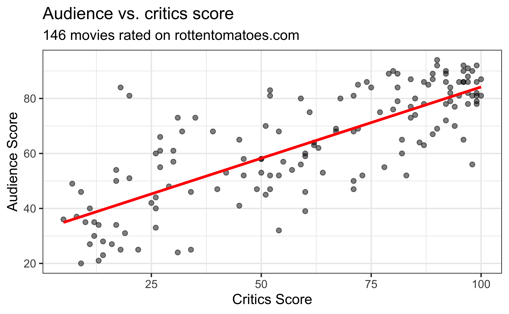
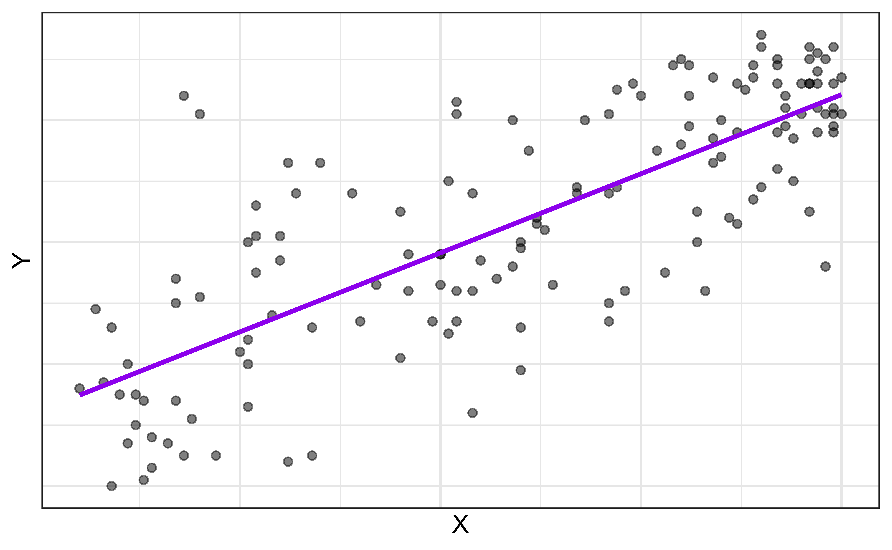
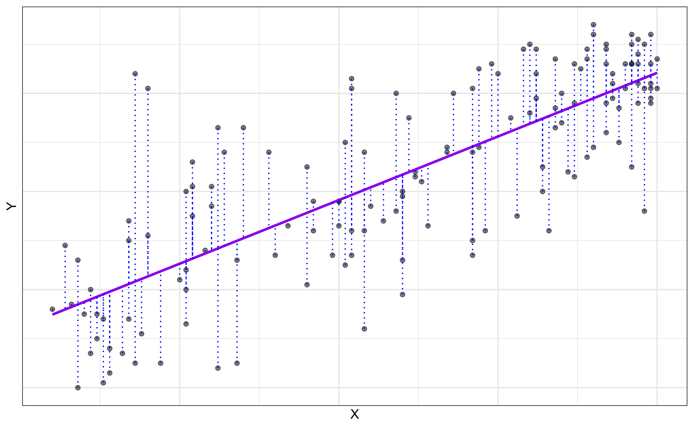
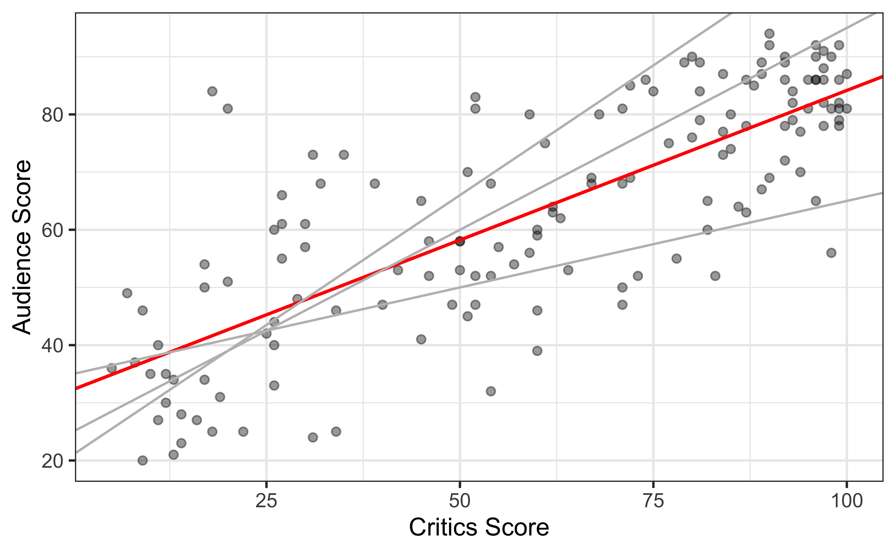
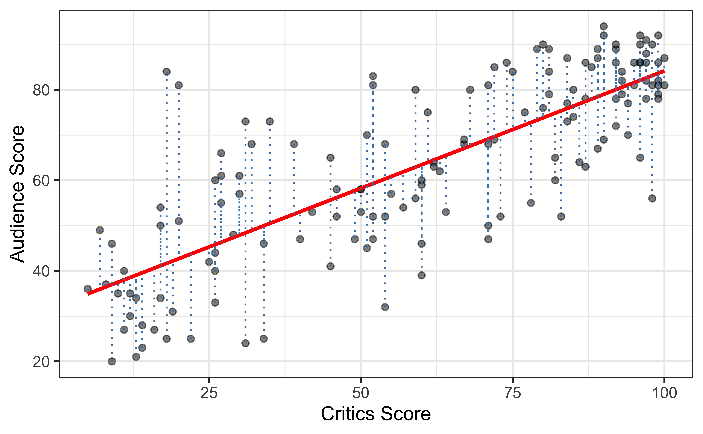

# load packages
library(tidyverse) # for data wrangling
library(broom) # for formatting regression output
library(knitr) # for formatting tables
library(patchwork) # for arranging graphs
# set default theme and larger font size for ggplot2
ggplot2::theme_set(ggplot2::theme_bw(base_size = 16))
# set default figure parameters for knitr
knitr::opts_chunk$set(
fig.width = 8,
fig.asp = 0.618,
fig.retina = 3,
dpi = 300,
out.width = "80%"
)Simple linear regression
Announcements
Complete Lab 00
Office hours start this week
- See Canvas homepage for times and locations
- Allison’s office hours start January 20
Introduction to R workshops at Duke library (see Friday’s Canvas announcement for details)
Triangle Sports Analytics Competition: https://triangle-sports.github.io/
- See Ed Discussion for full announcement
Questions from last class?
Topics
- How regression is used to understand the relationship between multiple variables
- Least squares estimation for the slope and intercept
- Interpret the slope and intercept
- Predict the response given a value of the predictor
Computing set up
Data science workflow

Movie scores
- Data behind the FiveThirtyEight story Be Suspicious Of Online Movie Ratings, Especially Fandango’s
- Data originally from the
fandangodata frame in fivethirtyeight package. Available inmovie-scores.csv - Contains every film released in 2014 and 2015 that has at least 30 fan reviews on Fandango, an IMDb score, Rotten Tomatoes critic and user ratings, and Metacritic critic and user scores


Data overview
movie_scores <- read_csv("https://intro-regression.github.io/data/movie-scores.csv")
glimpse(movie_scores)Rows: 146
Columns: 4
$ film <chr> "Avengers: Age of Ultron", "Cinderella", "Ant-Man", "Do…
$ year <dbl> 2015, 2015, 2015, 2015, 2015, 2015, 2015, 2014, 2015, 2…
$ critics_score <dbl> 74, 85, 80, 18, 14, 63, 42, 86, 99, 89, 84, 82, 99, 51,…
$ audience_score <dbl> 86, 80, 90, 84, 28, 62, 53, 64, 82, 87, 77, 60, 79, 70,…Univariate exploratory data analysis (EDA)
The data set contains the “Tomatometer” score (critics_score) and audience score (audience_score) for 146 movies rated on rottentomatoes.com.

Bivariate EDA

Bivariate EDA
Goal: Fit a line to describe the relationship between the critics score and audience score.

Why fit a line?
We fit a line to accomplish one or both of the following:
. . .
Prediction
What is an example of a prediction question for this data set?
. . .
Inference
What is an example of an inference question for this data set?
Terminology
Response, \(Y\): variable describing the outcome of interest
Predictor, \(X\): variable we use to help understand the variability in the response

Regression model
A regression model is a function that describes the relationship between the response, \(Y\), and the predictor, \(X\).
\[\begin{aligned} Y &= \color{black}{\textbf{Model}} + \text{Error} \\[8pt] &= \color{black}{f(X)} + \epsilon \\[8pt] & = \color{black}{E(Y|X)} + \epsilon \end{aligned}\]Regression model
\[\begin{aligned} Y &= \color{purple}{\textbf{Model}} + \color{black}\textbf{Error} \\[8pt]
&= \color{purple}{f(X)} + \color{black}\epsilon \\[8pt]
&= \color{purple}{E(Y|X)} + \color{black}\epsilon \end{aligned}\]

\(E(Y|X) = \mu_{Y|X}\), the mean value of \(Y\) given a particular value of \(X\).
Regression model
\[\begin{aligned} Y &= \color{purple}{\textbf{Model}} + \color{blue}{\textbf{Error}} \\[8pt]
&= \color{purple}{f(X)} + \color{blue}{\epsilon}\\[8pt]
&= \color{purple}{E(Y|X)} + \color{blue}{\epsilon}\\
\end{aligned}\]

Determine \(f(X)\)
Goal: Determine \(f(X)\)
How do we determine \(f(X)\)
Make an assumption about the functional form \(f(X)\) (parametric model)
Use the data to fit a model based on that form
Simple linear regression (SLR)
SLR: Statistical model (population)
When we have a quantitative response, \(Y\), and a single quantitative predictor, \(X\), we can use a (simple) linear regression model to describe the relationship between \(Y\) and \(X\). \[Y = \beta_0 + \beta_1X + \epsilon\]
. . .
- \(\beta_1\): Population (true) slope of the relationship between \(X\) and \(Y\)
- \(\beta_0\): Population (true) intercept of the relationship between \(X\) and \(Y\)
- \(\epsilon\): Error terms with mean 0 and variance \(\sigma^2_{\epsilon}\)
SLR: Regression equation (sample)
\[\hat{Y} = \hat{\beta}_0 + \hat{\beta}_1 X\]
- \(\hat{\beta}_1\): Estimated (sample) slope of the relationship between \(X\) and \(Y\)
- \(\hat{\beta}_0\): Estimated (sample) intercept of the relationship between \(X\) and \(Y\)
- No error term!
. . .
Why is there no error term in the estimated regression equation?
Estimating \(\hat{\beta}_1\) and \(\hat{\beta}_0\)

Residuals

\[\text{residual} = \text{observed} - \text{predicted} = y_i - \hat{y}_i\]
Least squares line
- The residual for the \(i^{th}\) observation is
\[e_i = \text{observed} - \text{predicted} = y_i - \hat{y}_i\]
- The sum of squared residuals is
\[e^2_1 + e^2_2 + \dots + e^2_n\]
- The Ordinary Least Squares (OLS) line is the one that minimizes the sum of squared residuals
Least-squares estimator of \(\hat{\beta}_0\)
Click here for full details on estimating \(\hat{\beta}_0\) and \(\hat{\beta}_1\) .
Slope and intercept
Properties of least squares regression
The regression line goes through the center of mass point, the coordinates corresponding to mean \(X\) and mean \(Y\): \(\hat{\beta}_0 = \bar{y} - \hat{\beta}_1\bar{x}\)
The slope has the same sign as the correlation coefficient: \(\hat{\beta}_1 = r \frac{s_Y}{s_X}\)
The sum of the residuals is approximately zero: \(\sum_{i = 1}^n e_i \approx 0\)
The residuals and \(X\) values are uncorrelated
Estimating the slope
\[\large{\hat{\beta}_1 = r \frac{s_Y}{s_X}}\]
. . .
\[ \begin{aligned} s_X = 30.1688 \hspace{15mm} &s_Y = 20.0244 \hspace{15mm} r = 0.7814 \\[10pt]\hat{\beta}_1 &= 0.7814 \times \frac{20.0244}{30.1688} \\&= \mathbf{0.5187}\end{aligned} \]
Estimating the intercept
\[\large{\hat{\beta}_0 = \bar{y} - \hat{\beta}_1\bar{x}}\]
. . .
\[ \begin{aligned}\bar{x} = 60.8493 & \hspace{15mm} \bar{y} = 63.8767 \hspace{15mm} \hat{\beta}_1 = 0.5187 \\[10pt] \hat{\beta}_0 &= 63.8767 - 0.5187 \times 60.8493 \\ &= \mathbf{32.3142}\end{aligned} \]
Interpretation
Submit your answers to the following questions on Ed Discussion:
The slope of the model for predicting audience score from critics score is 0.5187 . Which of the following is the best interpretation of this value?
32.3142 is the predicted mean audience score for what type of movies?
Does it make sense to interpret the intercept?
. . .
✅ The intercept is meaningful in the context of the data if
the predictor can feasibly take values equal to or near zero, or
there are values near zero in the observed data.
. . .
🛑 Otherwise, the intercept may not be meaningful!
Prediction
Making a prediction
Suppose that a movie has a critics score of 70. According to this model, what is the movie’s predicted audience score?
\[\begin{aligned} \widehat{\text{audience}} &= 32.3142 + 0.5187 \times \text{critics} \\ &= 32.3142 + 0.5187 \times 70 \\ &= \mathbf{68.6232} \end{aligned}\]Linear regression in R
Fit the model
Use the lm() function to fit a linear regression model
movie_fit <- lm(audience_score ~ critics_score, data = movie_scores)
movie_fit
Call:
lm(formula = audience_score ~ critics_score, data = movie_scores)
Coefficients:
(Intercept) critics_score
32.3155 0.5187 Tidy results
Use the tidy() function from the broom R package to “tidy” the model output
Format results
Use the kable() function from the knitr package to neatly format the results
Prediction
Use the predict() function to calculate predictions for new observations
Single observation
new_movie <- tibble(critics_score = 70)
predict(movie_fit, new_movie) 1
68.62297 Prediction
Use the predict() function to calculate predictions for new observations
Multiple observations
more_new_movies <- tibble(critics_score = c(24,70, 85))
predict(movie_fit, more_new_movies) 1 2 3
44.76379 68.62297 76.40313 Recap
- Described how regression is used to understand the relationship between multiple variables
- Used least squares to estimate the slope and intercept
- Interpreted the slope and intercept for simple linear regression
- Predicted the response given a value of the predictor
Next time
Model assessment for simple linear regression
- Complete Lecture 03 prepare
In-class activity on Thursday
- Bring fully-charged laptop / device to access RStudio container